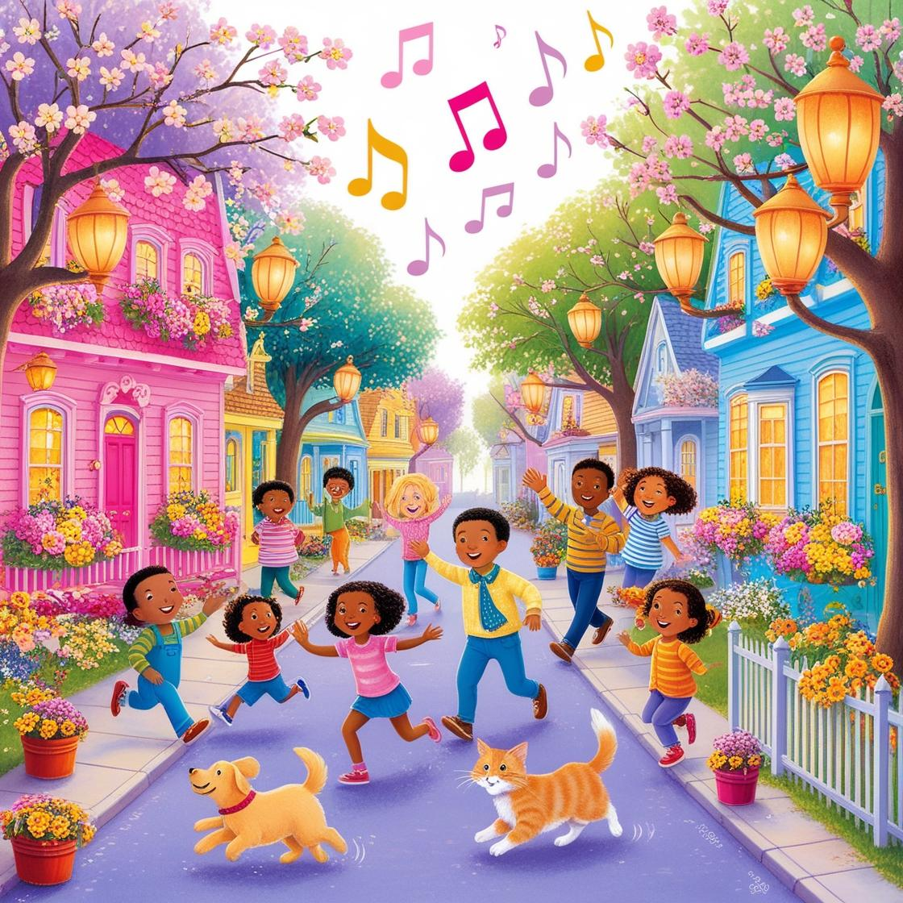

🔍 ¿De dónde viene esta hermosa música?
La voz misteriosa
Caminando por la calle, de pronto se oía una música suave... 🎶
Una voz dulce y linda cantaba melodías que hacían sonreír a todos. Las personas se detenían, miraban a su alrededor y algunas comenzaban a bailar sin darse cuenta.
—¿Quién canta así de bonito? —decían unos.
—¿De dónde viene esa música? —preguntaban otros.
—¿De dónde viene esa música? —preguntaban otros.
✨ Pero la voz no estaba arriba... ¡estaba muy, muy abajo! ✨
(Haz clic para descubrir más)
(Haz clic para descubrir más)
Escuchar cuento